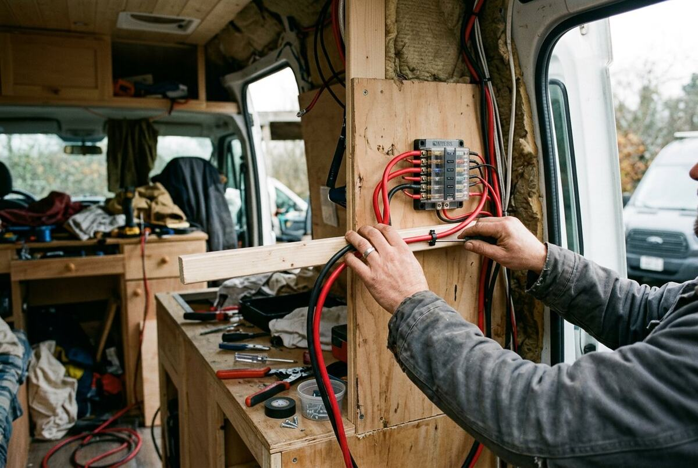
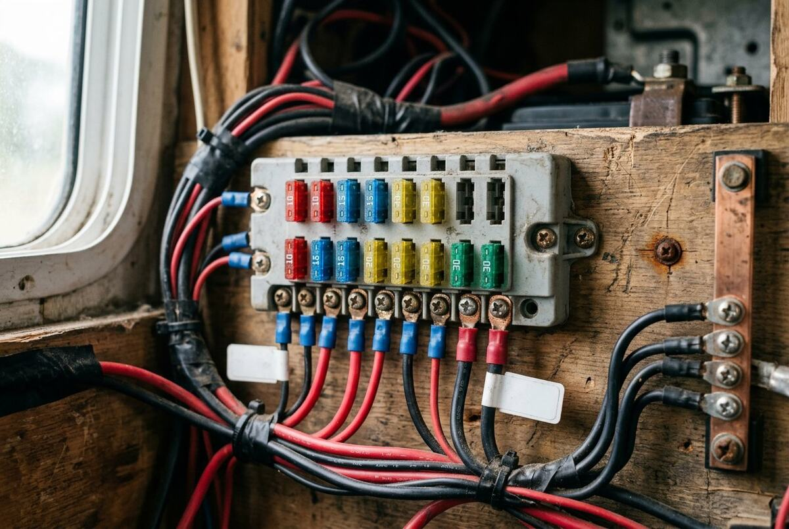
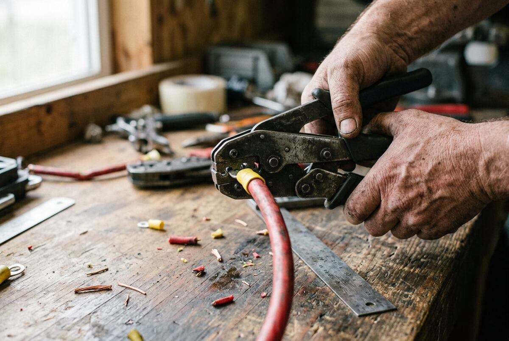
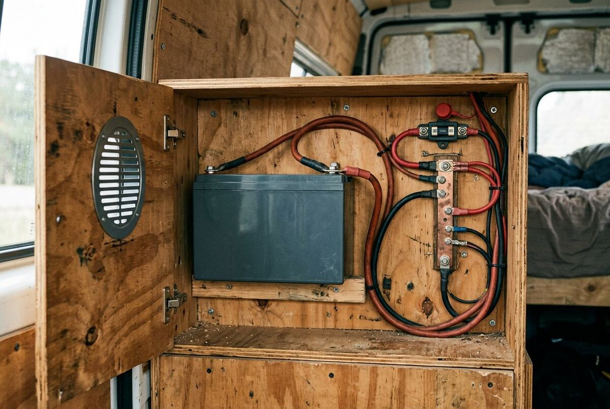
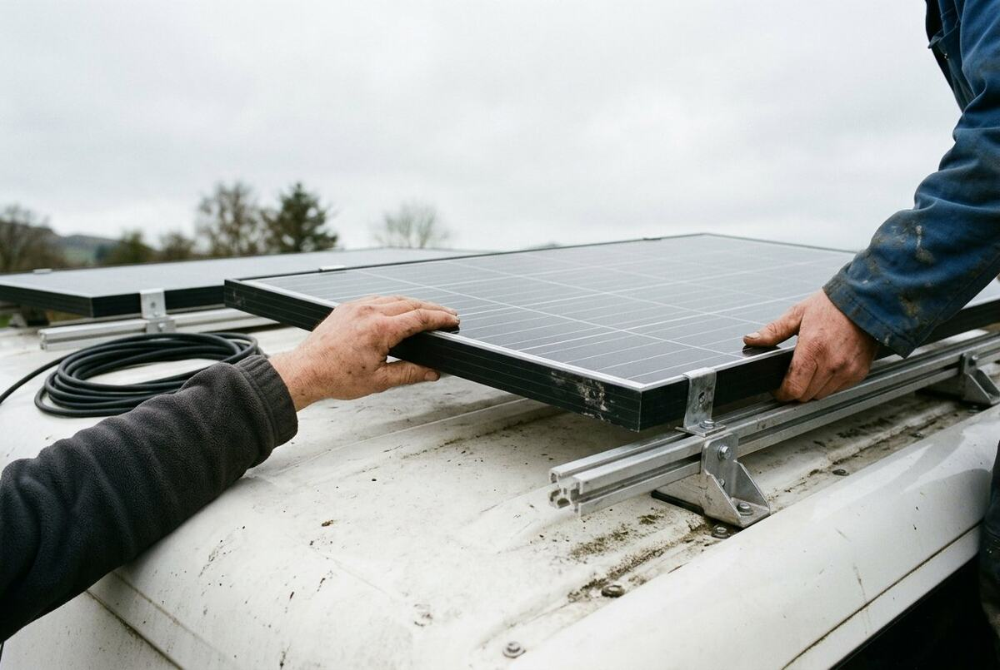
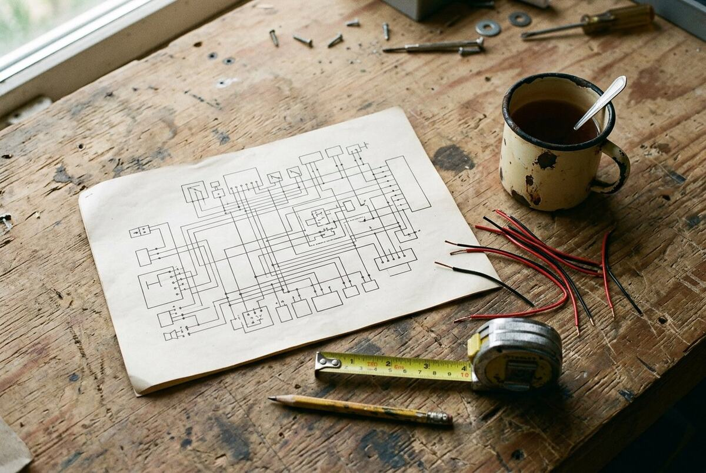

01 — Elektrik im Camper
Camper-Elektrik planen, bevor das erste Kabel liegt.
Ein Schaltplan, der rechnet: Querschnitt, Sicherung und Spannungsabfall für jede Leitung. Daneben die Aufnahme aus dem Ausbau, damit klar bleibt, worüber gesprochen wird.

02 — Beweisstrecke
Drei Stellen, an denen aus dem Plan Realität wird.
Keine Icon-Kacheln, keine Versprechen. Jede Zeile zeigt das Bauteil, den Rechenwert und den Weg zur Seite, auf der die Zahl hergeleitet wird.

Absicherung folgt dem Querschnitt
Der Nennstrom der Sicherung wird aus der Belastbarkeit der Leitung abgeleitet — nicht umgekehrt. Rechenweg und Annahmen

Der Übergang in die Werkstatt
Ein berechneter Querschnitt ist erst mit der passenden Verbindung brauchbar. Das Foto zeigt genau diesen Handgriff, nicht ein Symbol dafür. Zum Motivplan

Kapazität braucht einen Platz
Die Ah-Zahl entscheidet auch über Bauraum und Leitungslänge. Beides fließt in den Spannungsabfall ein. Batterie auslegen
03 — Plan ↔ Foto
Dieselbe Nummer auf dem Plan und am Bauteil.
Die eine Idee, die diese Seite von einer gewöhnlichen Tool-Seite unterscheidet: Wer eine Leitung im Plan fokussiert, sieht das zugehörige Foto. Die Zuordnung steht immer als Nummer und Text da — Bewegung ist nur Bestätigung, nie Information.
Fokus oder Klick markiert das Foto. Ohne JavaScript bleiben alle drei Bildunterschriften lesbar.
04 — Werkbank
Zwölf Rückmeldungen, alle beziffert.
Zum Anfassen: drücken, kopieren, aufklappen, umschalten, Auftritt abspielen. Jede Bewegung hat einen statischen Anker und einen Reduced-Motion-Ersatz; auf SEA-Zielseiten entfällt der Auftritt ganz.
scale 0.96 · 150 ms ease-out
Gedrückt, nicht gehüpft. Deaktivierte Knöpfe skalieren nie; die gefüllte Fläche bleibt der Anker.
300 ms · cubic-bezier(0.2, 0, 0, 1)
Icon-Cross-Fade von 0,25 auf 1, Deckkraft 0 auf 1, Unschärfe 4 px auf 0. Das Label „Kopiert“ trägt die Information, nicht die Animation.
3 Gruppen · 100 ms Versatz · 300 ms
150 ms · Zustand bleibt am Label
Sofortige, umschaltbare Zustände: kein Bounce, kein Overshoot, immer Text als Anker.
Weil jede Leitung im Plan einem realen Bauteil entspricht. Foto und Planausschnitt tragen dieselbe Nummer, damit die Zuordnung prüfbar bleibt.
Ja. Jedes Inhaltsbild hat einen beschreibenden Alternativtext, feste Maße und eine Bildunterschrift mit einer prüfbaren Aussage. Die Bilder stehen zusätzlich in der Sitemap.
Auf 300 ms, zu 150 ms, als Transition mit benannten Eigenschaften — keine Keyframes auf einen umschaltbaren Zustand.
Reduzierte Bewegung aktiv: nur Deckkraftwechsel, alle Zustände weiterhin ablesbar.
05 — Bildboard
Sechs Motive, ein Briefing.
Verfügbares Licht, Hände, Material, Gebrauchsspuren. Kein Text im Bild, kein Lächeln, kein Render. Diese sechs Dateien sind Konzeptplatzhalter und werden vor Livegang durch eigene Aufnahmen ersetzt.


06 — Prüfspur
SEO und SEA sind hier keine Überschrift, sondern Kopf und Event.
Der Prototyp trägt vollständige Kopfdaten, ein vorgeladenes LCP-Bild und sichtbare FAQ-Fragen, die mit den strukturierten Daten übereinstimmen. Conversion-Events sind im Konzept definiert, aber bewusst nicht eingebaut: ohne Einwilligung kein Tag.
| Canonical / Robots |
https://12v-planer.de/camper-elektrik/ · index, follow, max-image-preview:large
|
|---|---|
| Strukturierte Daten | WebSite · Organization · WebPage · BreadcrumbList · ImageObject · SoftwareApplication · FAQPage (nur sichtbare Fragen) |
| Bilder |
AVIF + JPEG-Fallback, srcset/sizes, feste Maße, Alt-Text,
Figcaption, images in der Sitemap
|
| Core Web Vitals | LCP ≤ 2,5 s (Ziel 1,8 s) · CLS 0 · INP ≤ 200 ms · Lighthouse ≥ 90 · Hero ≤ 60 KB |
| Message Match (SEA) | Keyword → Anzeige → H1 → Bildunterschrift → CTA |
| Conversion-Events |
planer_start · rechner_ergebnis · bauteil_gesetzt ·
stueckliste_erzeugt
|
| Recht & Einwilligung |
Impressum/Datenschutz vor Kampagnenstart vervollständigen · Consent Mode v2 · CSP in
app/layout.tsx und public/_headers
|